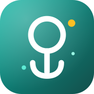

Cómo probar PsicoGestión Educativa
Gestión psicopedagógica escolar para la República Dominicana: expedientes, pruebas, planificación MINERD e informes. Funciona en la PC, en Android y en iPhone, y se sincroniza cifrado.
1 Instala la app en tu PC (Windows)
Descargar para Windows- Descarga el archivo PsicoGestion-Educativa-…-x64.exe.
- Ábrelo. Si Windows muestra «Windows protegió su PC», pulsa Más información → Ejecutar de todas formas (la app todavía no tiene firma digital).
- Crea tu cuenta con tu nombre y una contraseña.
Guarda bien tu contraseña. Con ella se abren tus expedientes en la PC,
en otra PC y en el teléfono. No se puede recuperar.
2 Conecta tu cuenta a la nube
- Instala en tu teléfono una app autenticadora: Google Authenticator o Microsoft Authenticator.
- En la PC abre Ajustes → Nube y escribe tu correo.
- Te llegará un correo con un código de 8 dígitos. Escríbelo en la app (revisa también «Spam»).
- Escanea el código QR con la app autenticadora y escribe los 6 dígitos que muestra.
- Pulsa Vincular. Desde ahí tus datos se sincronizan solos.
Cada persona tiene su propio consultorio en la nube. Nadie más ve tus expedientes,
y viajan cifrados: ni el servidor puede leerlos.
3 Instálala en tu teléfono
Abrir la app web- Android (Chrome): abre la app web → menú ⋮ → Instalar app.
- iPhone (Safari): abre la app web → botón Compartir → Agregar a pantalla de inicio.
Para entrar usa el mismo correo, el código de la app autenticadora y tu contraseña de PsicoGestión.
4 IA (opcional y gratis)
- Saca tu clave en aistudio.google.com/apikey.
- Pégala en Ajustes → Inteligencia artificial (en la PC y en el teléfono).
5 Qué probar
- Crear un expediente de prueba y verlo en el teléfono.
- Editarlo en el teléfono y ver el cambio en la PC (al instante con «Sincronizar ahora»).
- Grabar una nota de audio o subir una foto y abrirla en el otro equipo.
- Hacer una planificación semanal o mensual y exportarla a PDF o Word (en la PC).
Mientras sea una prueba, usa datos inventados, no expedientes de estudiantes reales.
6 Si algo falla
Anota qué estabas haciendo y el mensaje que apareció (una captura de pantalla ayuda mucho) y envíaselo a quien te invitó a probar.
Las actualizaciones llegan solas: la PC muestra «Reiniciar y actualizar» y el teléfono «Nueva versión lista».